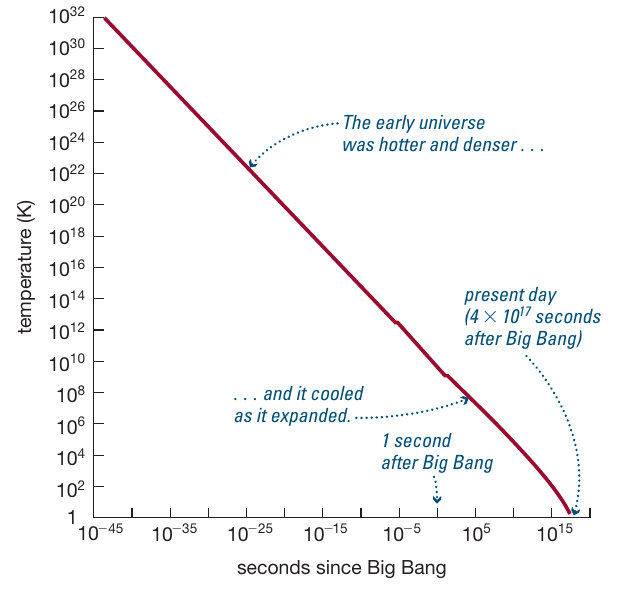
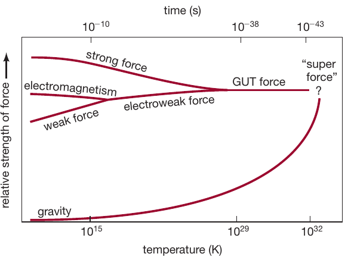

Reading: Chapter 22, 23
Top Hat
- Hubble law & Cosmological principle: raisin cake
walk through scales?
- Problem of evolution
- Origin of matter?
- Planck scale
Cosmology and the scientific method
Typically, empirically-grounded sciences rely on collective evidence with:
- Lab experiments: controlled, repeatable setup.
- Observations: possibly repeatable, uncontrolled (you take what you get). It is common to compensate for lack of control with large sample sizes, where a lot of "noise in the signal" averages to zero leaving cleaner information. Astrophysics often relies on astronomical numbers of objects!
What about Cosmology, the study of the Universe as a whole? It's not exactly a lab we control. Is it observational, but the sample size is 1 Universe!
Things are not grim though, as the physical conditions that the Universe passed through as a whole at some point in life are similar to conditions we can now find locally in some places inside the Universe (for example the temperature of the inside of a star, or the interactions between particles at the energies of a particle accelerator such as LHC). We can leverage knowledge obtain in labs to understand the physics.
Moreover, we have many independent ways to look at the one single sample! Cosmology rests on galaxy observations earlier and earlier in the Universe, how they are distributed across space time (e.g., Baryonic Acoustic Oscillations), and observations of the thermal emission of the Universe's own photosphere radiating black body emission.
N.B.: Note how curiosity and organized collective methodological skepticism work "around" the constraints of a problem if deemed interesting!
Big Bang Theory
Named such by Fred Hoyle in 1949 as a derogatory name for a theory he found implausible.
If the Universe is expanding, in the past, it was smaller - more compressed. Compressing a collection of particles (a gas) heats it up: think of the cool sensation of air you breathe out, but in reverse! So the Universe was hotter earlier

Where was the big bang?
This is related to the eternal question of where is the center and are we it that obsesses humans: the big bang corresponds to the emergence of spacetime itself (the general relativistic "object" that is bent by masses), and where/when means a particular "point" or set of coordinates in this "object" that acts as theater. There is no where into which one can place the big bang: all of space-time emerges at once in a single event, with a total dimension that is small (smaller than the Planck scale, see below), and started expanding. The spacetime of he Universe as a whole, described by its metric in GR then evolves.
While this description may appear to many as creationist, cosmology is not in the present day anymore concerned with the why or who, and physical theory stops being applicable at the Planck scale: we just haven't yet developed the conceptual tools to address scientifically that problem (and it is challenging to develop them without being able to experiment at that scale!).
A game with changing rules
- Top Hat: Fundamental forces
The reality at the scale that our intuitive experience is based on, there is a clear separation of scales at which each "fundamental" forces dominates:
- Gravity is \(\propto G\) which is a "small" number: it only matters for large amount of mass, e.g., when talking about interactions with a whole planet.
- Electromagnetism is \(\propto \alpha\simeq 1/137\), and it is the typically dominant force from planet-wide scale down to below atomic scale (\(\sim10^{5}\,\mathrm{cm}\) to \(\sim10^{-14}\,\mathrm{cm}\)). For example, "touching" is feeling the electrostatic repulsion of molecules that all orient one particular way. EM also holds together crystalline solid structures, determines light-matter interactions, etc.
- At nuclear scale \(\sim 10^{-13}\,\mathrm{cm}\) and below, the strong nuclear force takes over
- The weak force, is aptly named, and is typically not structurally important, but it plays a role in shaping the composition of the Universe
However, how do thing works when the entire space-time of the Universe itself is at a scale where all force start to act at comparable levels? The quest for a grand unification theory looks to understand physics in this conditions, expected in the very early Universe and maybe at the center of BHs.

A quantum mechanical (QM) description of these interactions (abandoning the Newtonian concept of force as "elementary") allows to "unify" EM and weak force in a single mathematical framework which has been tested in particle accelerators.
The strong force, while also described by quantum mechanics, cannot be described with the same math (technically, it cannot be treated as a small perturbation causing a "wave" in a field). But we are sure from nuclear physics that quantum mechanics is a useful description of these interactions.
Gravity instead is not described well by quantum mechanics (partly because experimenting with gravity in a lab is challenging!). When doing gravitational problems one typically neglects the other forces, and viceversa we neglect gravity when studying quantum mechanical interactions. When all the mass of the Universe was at a scale governed by a mash of all the interactions we describe with QM dominates, we do not know how the physics works. Studying quantum gravity is a way to develop theoretical understanding for this regime.
Planck scale
Named after Max Plack, who started QM with his theory of the thermal emission of radiation by a body of finite temperature, it is the scale at which all forces contribute to determining the interactions in the Universe.
We can estimate the size of the Universe when this was the case (or equivalently "when" this was) from our understanding of the relative "strength" of these forces:
Corresponding to a light crossing time \(\ell/c\sim10^{-43}\) seconds.
Note however that we already know that most of the mass in matter of the Universe (where matter means "stuff that feels gravity") is dark matter, for which non-gravitational interactions may intervene at small scales (we don't know how small). And there is also dark energy, for which even less is known.
Nevertheless, our physical understanding is sufficient to understand things pretty early on, and explain a lot of observed facts.
Creating matter
Cosmic microwave background
Photosphere of the baby Universe Photon-matter decoupling